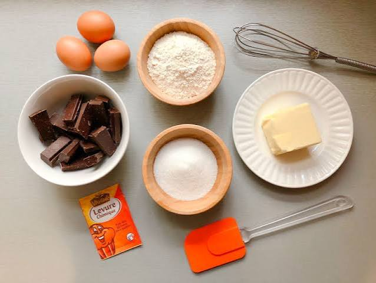
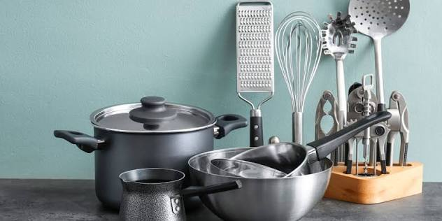
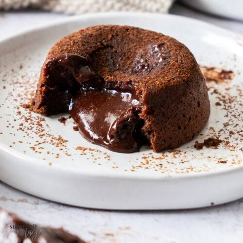

Les ingrédients
- 3 oeufs
- 120g de beurre demi sel mou
- 6 cs de sucre en poudre (90g)
- 2 cs bien bombées de farine T55 (50g)

Les ustensiles
- Un saladier
- Un fouet
- Une balance de cuisine
- Une spatule
- Un moule à gâteau

La préparation
- Préchauffe le four à 180 °C.
- Fais fondre le chocolat et le beurre.
- Dans un saladier, mélange les œufs et le sucre.
- Ajoute la farine et mélange bien.
- Ajoute le chocolat fondu et mélange le tout.
- Verse la préparation dans un moule beurré.
- Enfourne pendant 10 à 15 minutes pour garder un cœur fondant.
